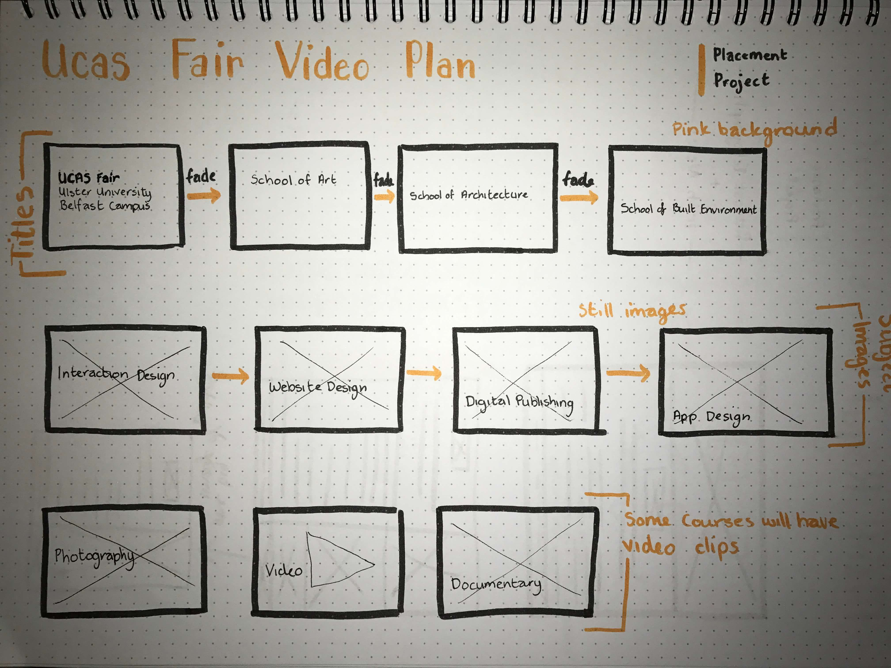
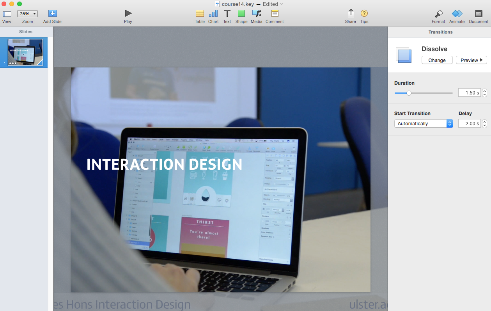
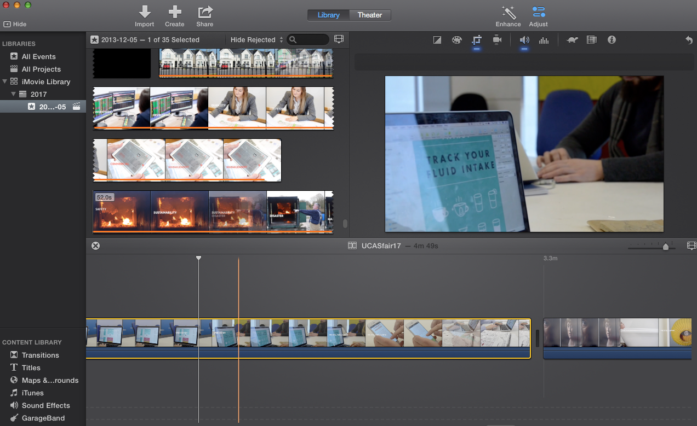
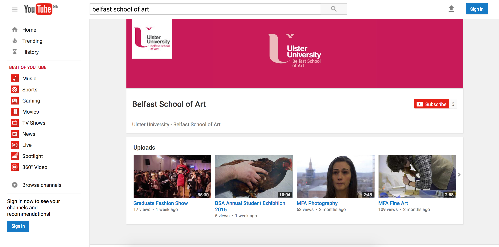
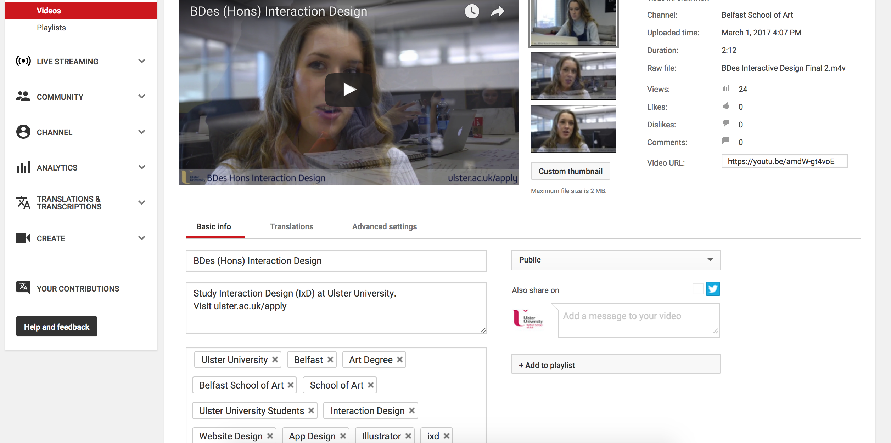

Thirteen
Video Editing

Julie approached me regarding making a video for the faculty's promotional table at the UCAS fair which was taking place later that week. I didn't have any experience with using video editing software so I was looking forward to learning something new and a bit of a challenge. I had to work with iMovie, as this was the only software that was available, so I did a quick search to read up on some of the key features of the program before I began, and drew out a quick storyboard to give me an idea of what I wanted to achieve.
Julie wanted me to keep the text used in the previous year within the video, as the idea behind it was to show corresponding images to inform the audience about the course. So with this I decided to use some of the video clips that were shot recently to be used as promotional videos on the course prospectus, as well as a video which was filmed last year for the School of Art Degree Show.
I used Keynote and iMovie to chop up the videos and arrange the clips and images with the text. I wanted the video to be interesting so I made sure to show plenty of student work throughout. No sound was added as the video was to be played in the background.
The video can be viewed by visiting: UCAS Fair Video
Following this I was contacted about setting up and managing a YouTube channel for the School of Art. I uploaded the School of Art logo to the channel banner and profile picture so the University's brand was present.
I created a channel and uploaded the videos, titling and tagging them appropriately to boost the views and to allow them to be listed on search results on YouTube, which provides more exposure for the courses. Course promotion videos had been filmed during the year featuring interviews with current students as well as a glimpse at their work. These videos were intended to go on the prospectus for visitors to the website to view.
The YouTube channel can be viewed by visiting: Belfast School of Art YouTube
Placement Journal
Paige Boyd